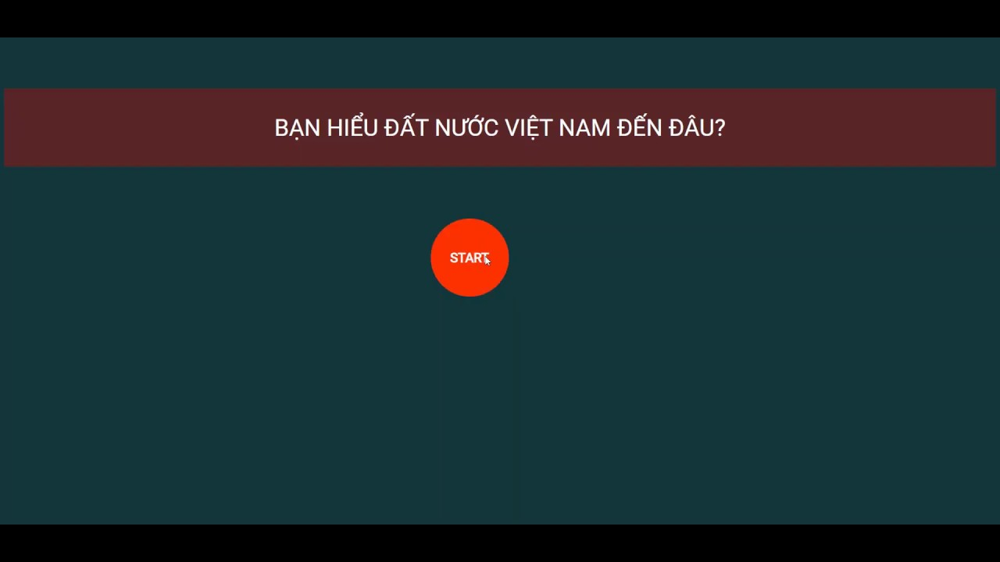

Tạo một trang chủ (index.html) chứa một danh sách liên kết các bài viết. Liên kết phải dẫn tới trang con. Các trang con yêu cầu phải có hình ảnh, danh sách, văn bản in đậm nghiêng các thứ các thứ (kết hợp thêm các thẻ mới trong phần Basic và Formatting trên trang tham khảo w3school). Trang chủ tối thiểu 5 liên kết, trang con tối thiểu 2 tiêu đề, 3 đoạn văn, 2 hình ảnh, 1 danh sách, ... Các trang phải có title (trên tab) khác nhau, nhưng favicon giống nhau. Code phải đẩy lên github Gửi link dạng: username.github.io/buoi1/index.html Nhớ ưu tiên bài nào áp dụng các thẻ mới.
Đoạn Văn bản Thứ 2 chứ nghiêng chữ đậm chữ gạch chân